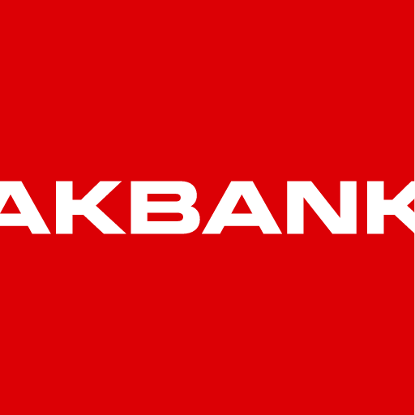
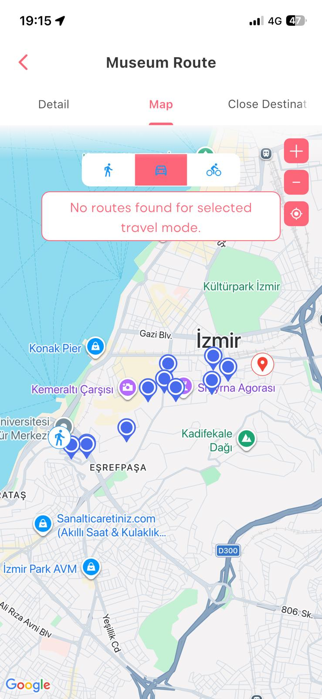

Doruk Gürsey
Software Developer
"Hello, I am Doruk Gürsey, I am a Software Engineer based in Ankara,Turkey. I am specializing in the C#/.NET ecosystem, with a career-long focus on architecting robust backend systems. i've worked cross functionally on full stack web applications. I actively explore programming paradigms to refine my architectural thinking skills."
Projects

Virtual IBAN Project
In the Akbank Corporate Banking Application, I developed a new feature that allows users to create virtual IBANs from a parent IBAN. This way, they can distribute their transactions and classify them individually by using a single Account and IBAN Number.

Visit Izmir
Visit Izmir is a TripAdvisor-like website that allows users to find points of interest in Izmir. In this application, I designed and implemented REST services for custom routing, allowing mobile users to create and share multi-destination travel routes.